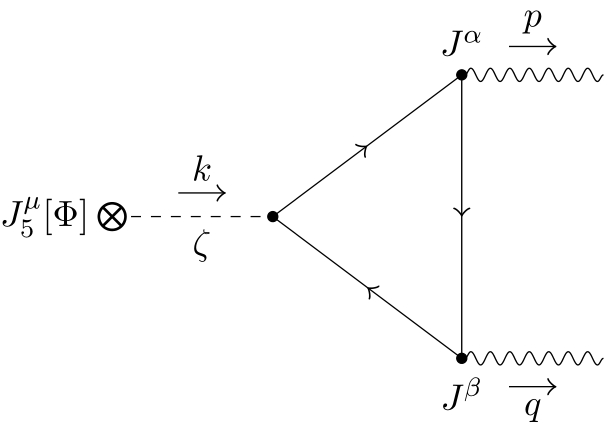

手征反常与轴子
手征反常
我们都知道，诺特定理告诉我们，如果系统的作用量在某一变换下不变，则存在对应的守恒流。不过这是经典场论的结论，在量子化之后，这个结论还能成立吗？大多数情况下，这个定理是有量子版本的对应的，但是在某些情况，这一定理的量子版本就不再成立了。我们把经典系统的对称性在量子化后丢失的现象叫做量子反常。
现在已知好多种量子反常，比如手征反常、规范反常、引力反常 等。我们这里介绍的是历史上最早发现的手征反常，又称为：轴矢反常、Adler-Bell-Jackiw（ABJ）反常或者三角反常。从历史上看，量子反常这个名字的由来，是源于“量子效应对经典对称性的破坏”的描述。
我们首先介绍狄拉克场，然后看看狄拉克场中的量子反常。
狄拉克场
狄拉克场的拉氏量可以写为： \[ \mathscr{L}=\bar{\psi} \gamma^\mu\left(i \partial_\mu+e A_\mu+b_\mu \gamma^5\right) \psi-m \bar{\psi} \psi \] 这里 \(\bar{\psi}=\psi^{\dagger} \gamma^0\)，而 \(m\) 则代表狄拉克费米子的质量。费米子与外部轴矢势 \(b_\mu \equiv A_\mu^5\) 耦合。狄拉克 \(\gamma-\)矩阵满足反对易关系 \(\left\{\gamma^\mu, \gamma^\nu\right\}=-2 \eta^{\mu \nu}\)，其中 \(\eta_{\mu \nu}=\operatorname{diag}(-1,1,1,1)\)，使得 \(\gamma^0=(\gamma^0)^{\dagger}\) 是厄米的，而 \(\gamma^i=-(\gamma^i)^{\dagger}\) 是反厄米的。手征矩阵 \(\gamma^5 \equiv =i \gamma^0 \gamma^1 \gamma^2 \gamma^3=(\gamma^5)^{\dagger}\) 也是厄米的，其特征值 \(\pm 1\) 分别对应于右手和左手手征性。
两种守恒量
狄拉克场的拉氏量在局域 \(U(1)^{\mathrm{EM}}\) 相位变换下保持不变，同时还存在另一种局域手征相位变换 \(U(1)^{\text {ch }}\)。这两种变换分别对应着电荷守恒和手征守恒： 1. 拉氏量在局域 \(U(1)^{\mathrm{EM}}\) 相位变换下不变 \[ \psi \rightarrow e^{i \alpha} \psi, \quad \bar{\psi} \rightarrow \bar{\psi} e^{-i \alpha}, \quad e A_\mu \rightarrow e A_\mu+\partial_\mu \alpha \] 2. 第二个变换是局域手征相位变换 \(U(1)^{\text {ch }}\) \[ \psi \rightarrow e^{i \beta \gamma^5} \psi, \quad \bar{\psi} \rightarrow \bar{\psi} e^{i \beta \gamma^5}, \quad b_\mu \rightarrow b_\mu+\partial_\mu \beta, \] 其中右手和左手手征性以相反方式变换。
- \(U(1)^{\mathrm{EM}}\) 变换可以“吞并”并进一步与矢势 \(\mathbf{A}\)相互抵消。
- \(U(1)^{\mathrm{ch}}\) 变换则可以“吞并”轴矢势 \(b_\mu\)。当 \(\beta=b_\mu x^\mu=\mathbf{b}\cdot\mathbf{r}-b_0t\) 时，轴矢势会被完全抵消掉。
根据诺特定理，这两个经典不变性意味着电流和轴向电流的守恒， \[ J^\mu=\frac{\delta S}{\delta A_\mu}=e \bar{\psi} \gamma^\mu \psi, \quad J_5^\mu=\frac{\delta S}{\delta b_\mu}=\bar{\psi} \gamma^\mu \gamma^5 \psi \] 其中 \[ \partial_\mu J^\mu=0, \quad \partial_\mu J_5^\mu=2im \bar{\psi} \gamma^5 \psi \] 可以看到轴矢流仅仅在 \(m=0\) 时守恒。因此，当 \(m=0\) 时，出现明显的 \(U(1)^{\mathrm{EM}} \otimes U(1)^{\mathrm{ch}}\) 对称性。
量子情况
事实上，在量子理论中，不可能同时满足 \(U(1)^{\mathrm{EM}}\) 规范不变性和 \(U(1)^{\mathrm{ch}}\) 手征不变性。
从测度项来看
在量子理论中，我们需要考虑测度的变换， \[ \mathcal{D} \psi \mathcal{D} \bar{\psi} \to \mathcal{D} \psi \mathcal{D} \bar{\psi} \ \rm{det}[e^{i \beta \gamma^5}] = \mathcal{D} \psi \mathcal{D} \bar{\psi} \ e^{i \Delta S_\theta} \] 这里 \(\Delta S_\theta =\mathrm{Tr} [\theta(x)\gamma^5]\)，因此我们得到了变换后的配分函数 \[ Z^{\prime}=\int \mathcal{D} \psi \mathcal{D} \bar{\psi} \ e^{i\left(S+\Delta S_\theta\right)} \]
其中 \[ \begin{aligned} & S=\int d^4 x \bar{\psi} i \gamma^\mu\left(\partial_\mu+i A_\mu\right) \psi=\int d^4 x \bar{\psi} i \gamma^\mu D_\mu \psi, \\ & \Delta S_\theta=\operatorname{Tr}\left[\theta(x) y^5\right]=\int d^4 x \theta(x) \bar{\psi} \gamma^5 \psi . \end{aligned} \]
\[ \gamma^\mu D_\mu \phi_n(x)=\varepsilon_n \phi_n(x) \]
在 \(S_D\) 的本征态下，反常作用量 \(\Delta S_\theta\) 可以写为 \[ \Delta S_\theta=\int d^4 x \theta(x) \sum_n \phi_n^*(x) \gamma^5 \phi_n(x), \]
积掉费米子场，最终反常作用量为 \[ \Delta S_\theta = \int \mathrm{d}^4x \ \theta(x) \mathbf{A}(x) = \frac{e^2}{32\pi^2} \int \mathrm{d}^4x \ \theta(x) \epsilon^{\mu\nu\rho\lambda} F_{\mu\nu} F_{\rho\lambda} \] 这给出了手征反常电流方程 \[ \partial_\mu J^\mu_5 = -\frac{e^2}{16\pi^2} \epsilon^{\mu\nu\rho\lambda} F_{\mu\nu} F_{\rho\lambda}=\frac{2\alpha}{\pi} \mathbf{E} \cdot \mathbf{B} \]
从费曼图来看
这些对称性的冲突首次出现在三角图的单圈级别： 
该单圈图中评估费米子三角振幅的过程， \[ \Gamma_5^{\mu \alpha \beta}(p, q)=\left.i \int d^4 x \int d^4 y e^{i p \cdot x+i q \cdot y}\left\langle 0\left|\mathcal{T} J_5^\mu(0) J^\alpha(x) J^\beta(y)\right| 0\right\rangle\right|_{A=0} \] 通过施加低能理论的适当对称性来进行动量空间中的计算。
轴子电动力学
完整的作用量包含了三部分：狄拉克费米子、电磁场以及反常部分 \(S=S_D+S_{E M}+\Delta S_\theta\)， \[ \begin{gathered} S_D=\int d^4 x \bar{\psi} i \gamma^\mu\left(\partial_\mu+i A_\mu\right) \psi, \\ S_{E M}=-\frac{1}{4} \int d^4 x F_{\mu \nu} F^{\mu \nu}, \\ \Delta S_\theta=\frac{e^2}{32 \pi^2} \int d^4 x \theta(x) \epsilon^{\mu \nu \rho \lambda} F_{\mu \nu} F_{\rho \lambda} . \end{gathered} \]
积掉狄拉克费米子场使其仅仅成为背景，并且他会影响介电常数 \(\epsilon\) 和 \(\mu\)，于是我们只留下了关于电磁场的方程：
\[ \begin{gathered} \boldsymbol{\nabla} \cdot(\mathbf{E}-c \kappa \theta \mathbf{B})=\frac{\rho_e}{\epsilon_0}, \\ \nabla \times(c \mathbf{B}+\kappa \theta \mathbf{E})=\partial_t(\mathbf{E}-c \kappa \theta \mathbf{B}) / c+c \mu_0 \mathbf{J}_e, \\ \boldsymbol{\nabla} \cdot(c \mathbf{B}+\kappa \theta \mathbf{E})=0, \\ \nabla \times(\mathbf{E}-c \kappa \theta \mathbf{B})+\partial_t(c \mathbf{B}+\kappa \theta \mathbf{E}) / c=0, \\ \square \theta=-\frac{\kappa}{\mu_0 c} \mathbf{E} \cdot \mathbf{B}-\frac{\partial U(\theta)}{\partial \theta} . \end{gathered} \] 从方程中我们可以观察到三个明显的性质： 1. 电场与轴子耦合在一起会形成等效的磁场：\((c \mathbf{B}+\kappa \theta \mathbf{E})\). 2. 而磁场与轴子耦合在一起则会形成等效的电场：\((\mathbf{E}-c \kappa \theta \mathbf{B})\). 3. 垂直的磁场和电场 \(-\frac{\kappa}{\mu_0 c} \mathbf{E} \cdot \mathbf{B}\) 可以产生轴子，可以形成轴子源。
外尔半金属中的轴子
外尔半金属（Weyl semimetals）是一类具有non-trivial拓扑性质的材料。在外尔半金属中，电子的能带结构中会出现一种叫做“外尔点”（Weyl points）的特殊交点，这些交点对应着一种质量为零的费米子，这种费米子被称为外尔费米子。每个外尔点都具有特定的手征性，并且总是正反手性成对出现（这是晶格模型的特征）。同时轴子也可以出现在外尔半金属中，但在外尔半金属中，轴子并不直接对应于粒子物理中的基本轴子，而是指一种拓扑性质，和外尔半金属中的电磁响应紧密相连。
轴子在外尔半金属中的作用可以通过“轴子电磁响应”来理解，这种响应机制可以影响材料的电磁性质。
通过动态介电常数响应，拓扑磁电效应等，以及在波导结构中的应用。设 \(\rho=\mathbf{J}=0\) 得到 \[ \omega^2-k^2= \pm\left(p_0 k-\omega p \cos \varphi\right)\left[1-\frac{p^2 \sin ^2 \varphi}{\omega^2-k^2}\right]^{-\frac{1}{2}} \]
其中\(p=\frac{e^2}{2\pi^2}b\)，\(p_0=\frac{e^2}{2\pi^2}b_0\)，\(\varphi\) 是 \(\mathbf{p}\) 和 \(\boldsymbol{k}\) 之间的夹角，\(\pm\) 代表左右手圆偏振光极化方向。这个色散关系还是比较复杂的，上式复杂的右边项是由手征反常导致的，而左边则是光学上线性色散 \(\omega= \pm k\) 。
1. 双折射 为了看出双折射的效应，不妨做一个想象实验：将一束沿着 \(z\) 方向传播的平面波，同时 Weyl 半金属中 \(p\) 也设为 \(z\) 方向，则夹角 \(\varphi=0\)，上式可化为 \[ \omega \approx \pm \sqrt{k_z^2 \pm\left(p_0-p\right) k_z} . \]
对右边项进行零阶近似即 \(\omega=k_z\)，因此得到一个有效的色散关系。一般情况下，\(\delta=\left(p_0-p\right)\) 是一个小量，从上式可以明显看出在 \(z\) 方向传播的光场会出现两个等相位面，这就是 Weyl 半金属中手征反常造成的双折射现象。
2. 速子 另一个极端情况是当 \(k_z<\delta\) 时，其中一支模式会变成虚频率，在场论中被认为是速子模式（tachyon，一种超光速的粒子激发），然而在实际材料中，其传播是指数衰减的消逝波模式。